To enhance the contrast of input raw satellite image or image with general formats through various enhance mehods such as Linear Stretching, enhancement using Standard Deviation, Histogram Equalization etc.

Contrast is the difference in the intensity of the object of interest compared to the background (rest of the image). The perceptual contrast does not change linearly with the difference in the intensity. The perceptual contrast is a function of the logarithm of the difference in the object and background intensities. This means that in the darker regions, small changes in intensity can be noticed, but in brighter regions, the difference has to be much more. Contrast in the input images is often poor due to inadequate range of reflectance from ground targets, campus ageing sensors, etc. so that the full range of display medium is not utilized.
For better understanding of contrast enhancement you should watch all the recommended videos :
Video For Contrast Of An Image
There are several ways through which one can obtain contrast enhanced image. Some of them are :
Linear Contrast Enhancement
Suppose the display range of the monitor is Omin to Omax, which means the monitor can display (Omax Omin + 1) levels. Let the input range be Imin to Imax. When the input image has poor contrast, then the range of gray levels in the image is much less than the display range of the monitor:
(Omax – Omin) >> (Imax – Imin)
If Imax is in the left half of the gray scale, then the image appears dark. If Imin appears in the right half of the gray scale, then the image appears light or faded out.
Low contrast images can be linearly enhanced using simple contrast stretch operations. Then the linear contrast stretch operation is defined by
y=((Omax − Omin)/(Imax − Imin))*( x − Imin )
x is the input level and y is the output level.
Video For Linear Contrast Enhancement
Standard Deviation Based Contrast Enhancement
Most software packages perform default contrast enhancement prior to display of an image. In such cases, automatic computation of Imax and Imin are computed as
The image for the second band, …, up to Band K follow. Ideally suited when the multi-band image is processed one band at a time, such as image enhancement, neighbour-hood filtering, etc. More overheads when all band values are required at each pixel.
Imin = µ – k.σ
Imax = µ + k.σ
k is an integer, often equal to 1 or 2, µ is mean and σ is the standard deviation.
This is also referred to as Standard Deviation Stretch.
Human visual system is not linear; so are films and computer monitors When we wish to examine the details in the dark portion of the image at the expense of the bright portion, then linear contrast stretch is not very useful.
Histogram Equalization Based Contrast Enhancement
When the image contains very few similar valued gray levels, then the ability to interpret it is hampered. It is desirable that the dynamic range of the display device is better utilized. One way to achieve this is by transforming the image such that all gray levels have equal likelihood of occurrence.
Principal of Histogram Equalization:
Given an imperfect histogram, and an ideal histogram that has equal population of all gray levels, map the input histogram to approximate the “equalized” histogram.
How to equalize?
Essentially, the enhanced image which has an equalized histogram has (ideally) equal number of pixels at each gray level. In practice, we can only achieve an approximation of it. For an equalized histogram, the cumulative histogram is known, given the size of the image and the number of gray levels. For a gray level, corresponding to its cumulative frequency, find the nearest gray level that matches the ideal cumulative frequency. Therefore image enhancement by histogram equalization is achieved by the mapping of the actual cumulative histogram of the image and the desired cumulative histogram.
Interpretation of Histogram Equalization
Video For Histogram Equalization Based Contrast Enhancement
Logarithmic Contrast Enhancement
Equation for Logarithmic contrast enhancement can be expressed as:
y = k.log(1+x) + c
Nature of log curve – rapid rise initially, and levels off later. Greater difference in values of log function for smaller gray levels, smaller difference for larger gray levels.
Nature of logarithmic function can be seen through the graph below:
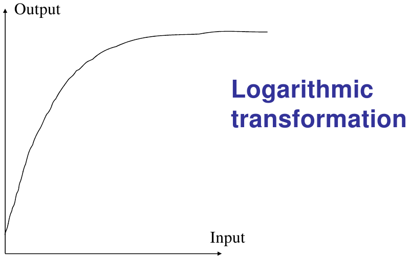
Exponential Contrast Enhancement
y = k.xr + c
The exponential curve rises much faster for higher values of the argument of exp(.).

Step by step Procedure:
These are the general guide lines and steps that should be followed to perform the experiment :
-
Select Image
Select the image on which you want to perform the experiment.
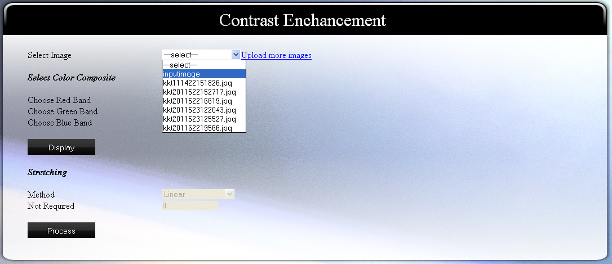
You can also upload your own images by clicking on "upload more images".
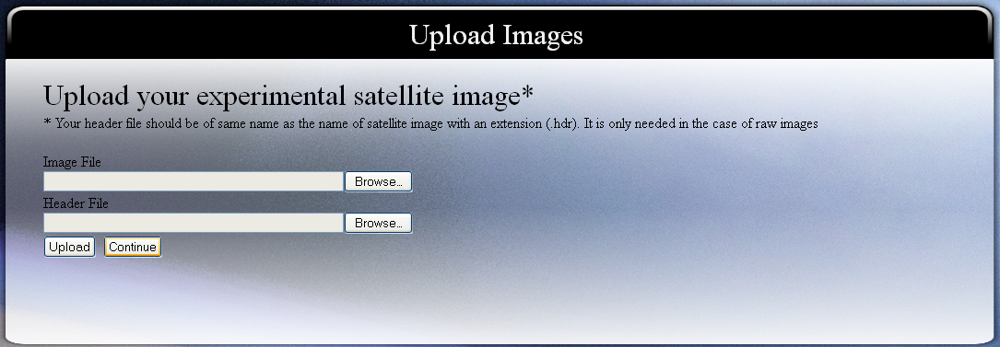
-
Choose band combination
As we know that an image can have more than three bands, so we need to specify which bands should be used for display purpose.
-
Click on "Display" button
This will take the parameters you provided and process them. The output will be shown to you as:
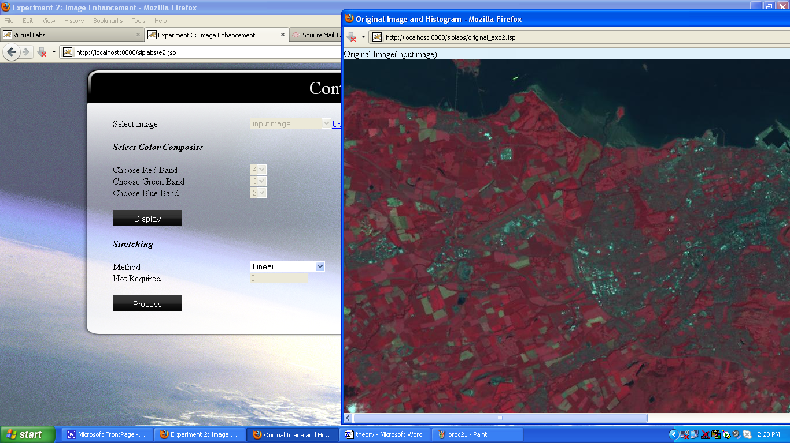
-
Select the method of contrast enhancement.
You can select one of the method of contrast enhancement from Linear, Standard Deviation, Histogram Equalization, Logarithmic, Exponential or Decorrelation based streching. Enter the required parameter.
-
Click on the button "Process"
This will give you the enhanced version of original image as output.

Here we will discuss how to interpret the outputs produced by experiment 2, i.e., Contrast Enhancement. So, please follow the steps as shown below to get the sample output for interpretation.
- Select "inputimage" as your experimental image. "inputimage" is a satellite image having 6 bands stored in BIL format as raw image. It has the dimension 801x1401. Since in our discussion we will cover upto its 4th band, so it is necessary to understand that what the first 4 bands of this image represents. The first four bands are as follows: blue, green, red and infra-red respectively.
- Choose "view color composite", it is already set as default.
- Select band 4 for red band, band 3 for green band and band 2 for blue band. As according to the theory described in theory section of Virtual Lab, we already know that a standard FCC uses infra-red wave band as red display, red wave band as green display and green wave band as blue display. So, the same we are doing here to get the standard FCC of "inputimage".
- Click on Display button
After the processing you will get an image. This is the standard FCC of "inputimage". You can also save it by right clicking it and then clicking on "save image as". The image will look like:
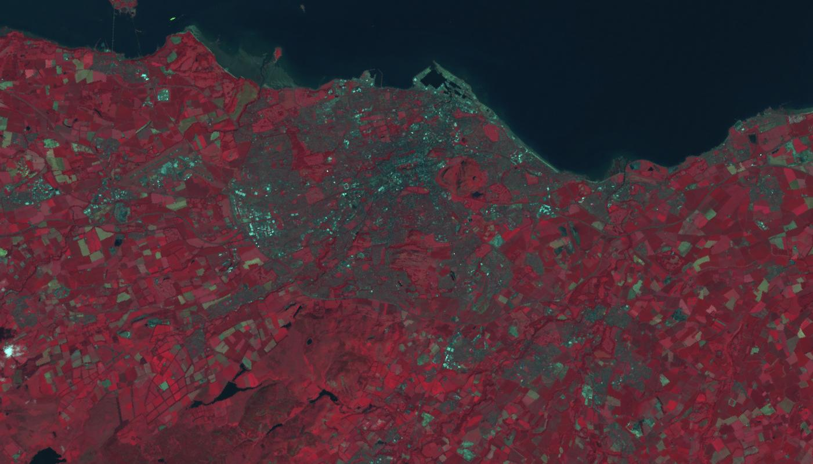
You will also get histogram for the bands selected for display. The histogram in our case will be:
Histogram for Infra-red Band (displayed as red in fcc):
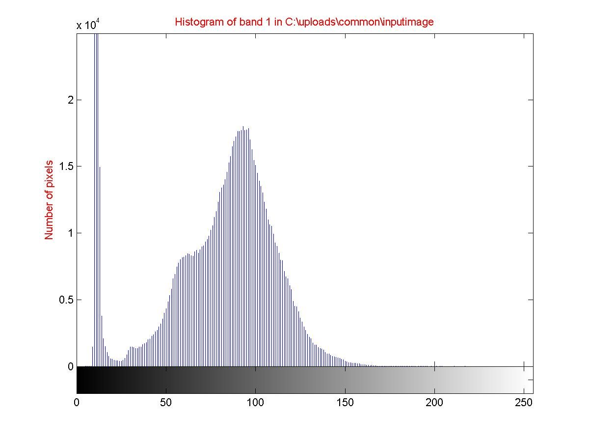
Here, you can easily notice that most of the pixels are assigned between grey level 10 to 20. Also, another majority of pixels are assigned to gray level 60 to 120. We, will be comparing the histograms of the three bands (green, red and infra-red) used in the example for understanding what we can easily get from image histogram.
Histogram for Red Band (displayed as green in fcc):
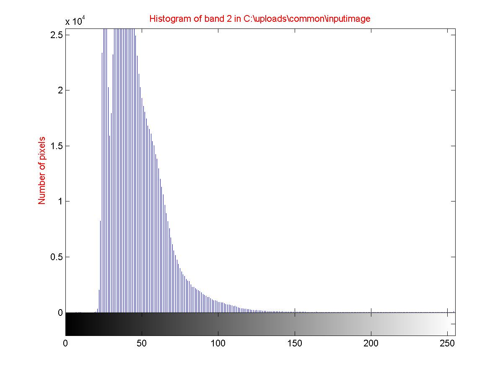
Here, it can be noticed that most of the pixels are assigned between gray level 25 to 70 and a wide range of grey level is not used.
Histogram for Green Band (displayed as blue in fcc):
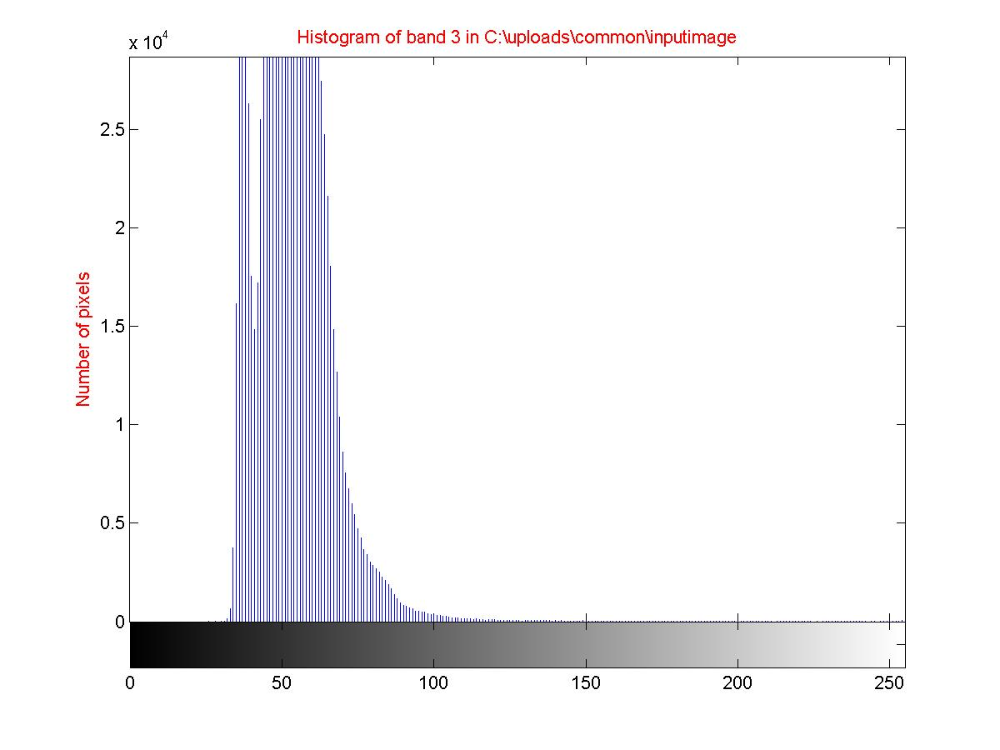
Here, it is almost similar to red band, i.e., most of the pixels are assigned between gray level 30 to 70. Now, as seen from the histogram of the three bands, it can be concluded that the contrast of infra-red band is highest among these three bands. As it has been provided in theory (see video lecture), that for a good contrast a histogram should be well distributed among all the gray levels. Other attributes that we can get from histogram are: mean, median, variance, standard deviation, etc. (see video lecture).
Now, we are going to apply contrast enhancement over "inputimage". To do so, continue your steps in the experiment as:
-
Choose the method of contrast enhancement. Here we will choose "Standard Deviation". (It is set by default)
Here, we are going to interpret the results after application of enhancement using standard deviation. For other methods you can interpret the result in similar manner using theory for respective methods.
- Enter "2" as "standard deviation".
By doing so, we are limiting the stretch to [mean-2*(standard deviation)] to [mean+2*(standard deviation)]. Where, mean and standard deviation is computed over a particular band.
- Click on "Process" button.
You will get the enhanced image and histogram of each band used for display after enhancement, which will be as follows:
Enhanced image
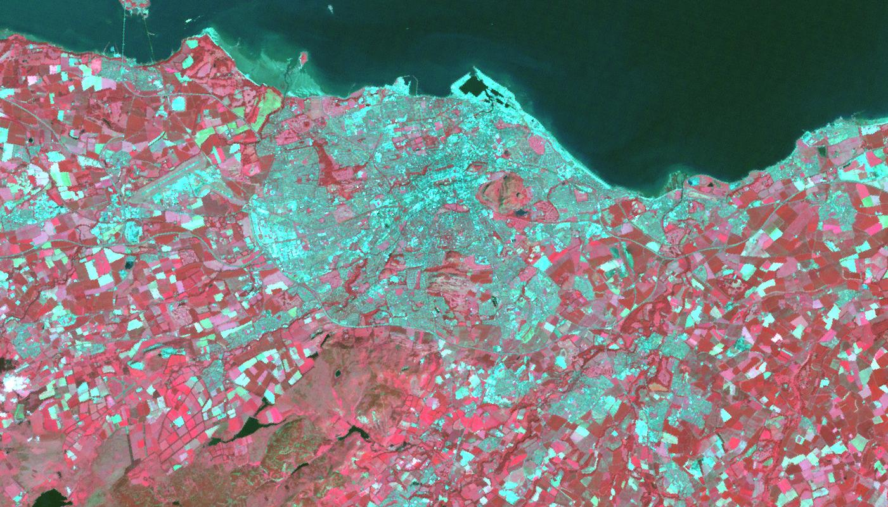
Histogram after enhancement for red band
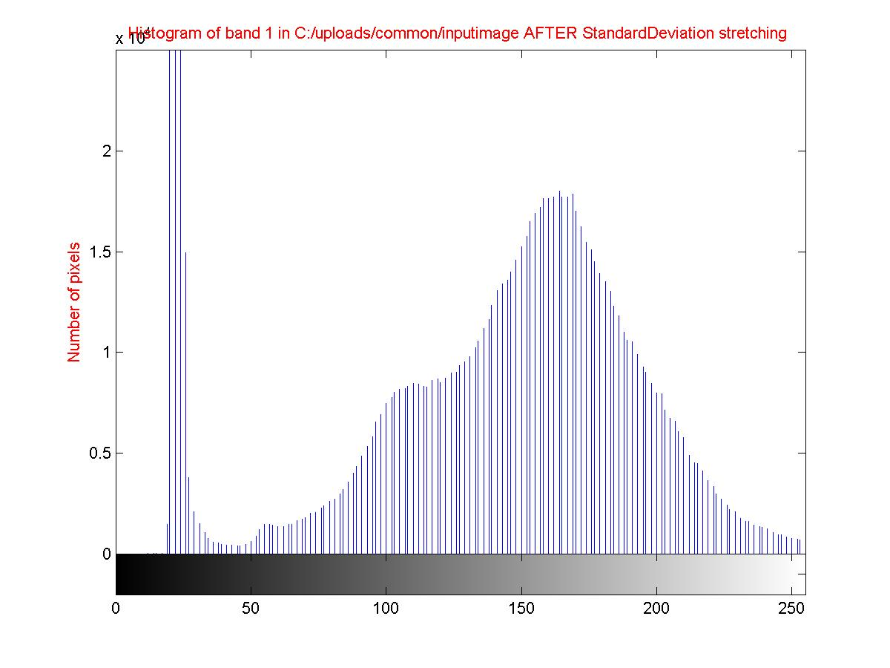
Histogram after enhancement for green band
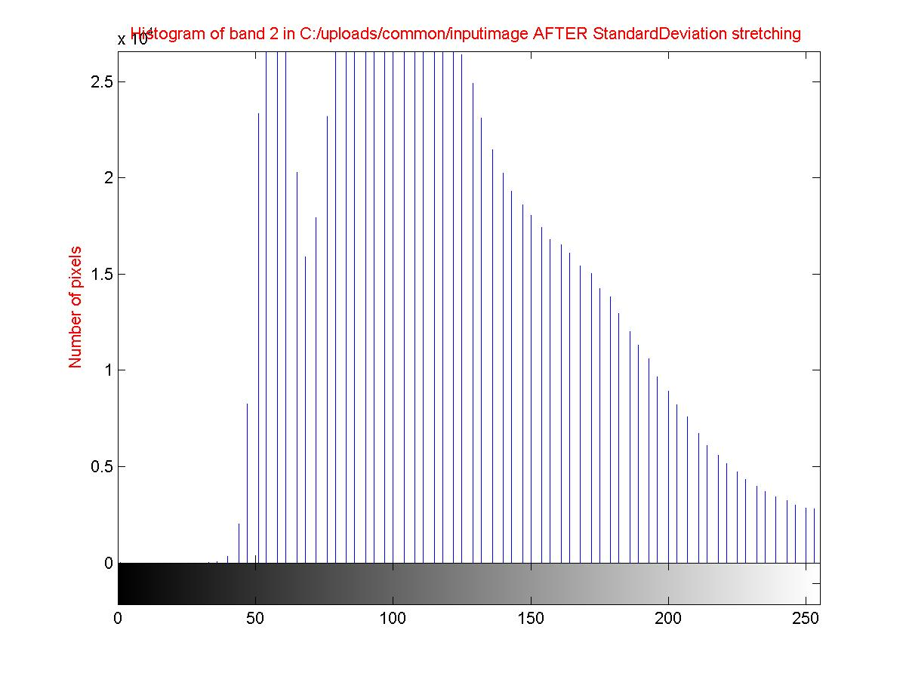
Histogram after enhancement for blue band
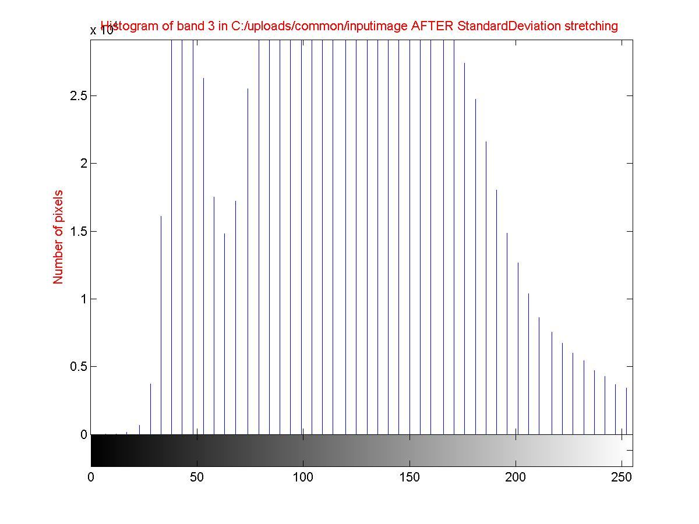
Interpretation using histograms
Now, as you can see that the histograms before enhancement were concentrated around few gray levels but after enhancement in all the three bands distribution of gray levels is uniform from 0 to 255. Since, for the same number of pixels the gray levels used are much higher therefore, the output image becomes enhanced as discrimination between gray levels is increased.
HISTOGRAM EQUALISATION
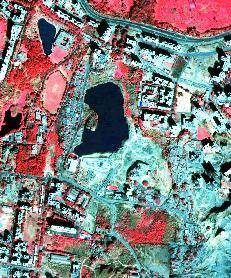
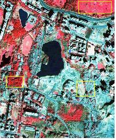
Compare the two images shown above. The first one is the original sample image of quickbird.jpg. Here the gray values have been recomputed using mean and standard deviation values. You will observe that some of the areas have grown in brightness values (look in the rectangular enclosed areas). This is because a number of pixels in the darker regions have now increased gray values after histogram equalization. You can also compare the histograms to see change in pixel values for a particular gray level.
LOGARITHMIC STRETCHING
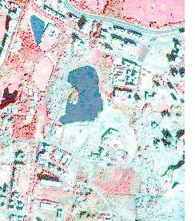
As can see that after Logarithmic stretching the original image has brightened all over the image. This is because the all the pixel gray level values have been pushed towards and nearer to 255. See for yourself how the histogram looks like before and after stretching by implementing this method on quickbird.jpg.
EXPONENTIAL STRETCHING
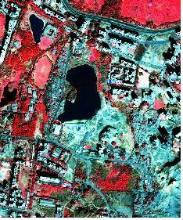
Observe that all the areas have considerably darkened in color. This is because the distribution of gray levels have been changed. The number of pixels whose gray values fall below mean of the distribution have considerably improved. Compare the histograms of both original and stretched image.
DECORRELATION STRETCH
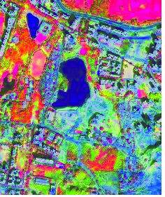
Image shown above is the result of decorrelation stretching. Here the color separation between different bands are enhanced and hence the exaggerated colors. Like all other stretching methods this technique helps in easy discrimination of features.
LINEAR STRETCHING
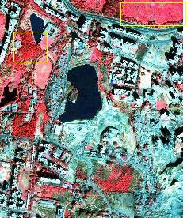
Compare the original image and above image you will find a slight enhancement or increase in brightness in the regions enclosed by rectangular figures. Linear tries to distribute the gray values uniformly.

Books:
[1] Rafael C. Gonzalez, Richard E. Woods and Steven L. Eddins (2004), Digital Image Processing using MATLAB, Pearson Education
[2] J.A. Richards and X. Jia, Remote Sensing Digital Image Analysis, 4th edition, Springer, Berlin, 2006
[3] R. Schowengerdt, Remote Sensing: Models and Methods for Image Processing, 3rd edition, Academic Press, Mass., 2007
[4] J.R. Jensen, Digital Image Processing: A Remote Sensing Perspective, 4th edition, Prentice-Hall, NJ, 2005
[5] P.M. Mather and M. Koch, Computer Analysis of Remotely Sensed Images, John Wiley, NY, 2011
[6] B. Tso and P.M. Mather, Classification Methods for Remotely Sensed Images, 2nd edition, CRC Press, 2009
[7] Tim Morris (2004), Computer Vision and Image Processing, Palgrave Macmillan
[8] Bhabatosh Chanda and Dwijest Dutta Majumder (2002), Digital Image Processing and Analysis
[9] A. K. Jain (1989), Fundamentals of Digital Image Processing. Englewood Cliffs, NJ: Prentice Hall
[10] Raman Maini and Himanshu Aggarwal (2010), A comprehensive review of image enhancement techniques, Journal of computing, Vol. 2, Issue. 3, pno 8-13, 2010